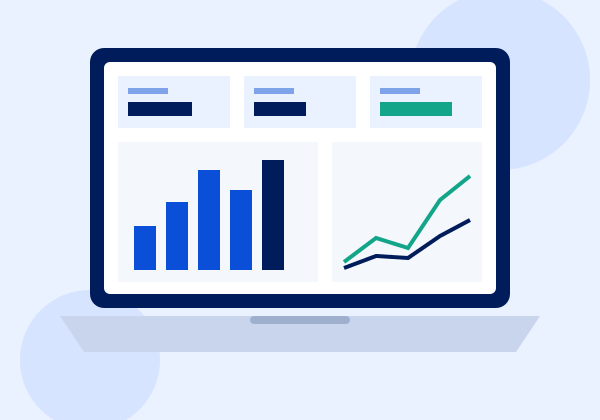

Our Services
Three services you can buy today. Each answers one decision, with deliverables and fee agreed in writing first.

Business intelligence and reporting
The problem
Numbers live in several files, arrive late, and different teams quote different versions.
What we do
We agree the measures that matter, bring the data together, and build a dashboard and monthly reporting pack in Power BI or Excel, whichever suits your team.
What you receive
- KPI definitions written in plain language
- Dashboard or reporting workbook
- Monthly management (MIS) pack
- Handover session and documentation
Best for
Owner-managed firms and growing companies that report from spreadsheets or accounting software.
Sample layout, invented data.
Financial analysis and modelling
The problem
Plans are built once a year, and nobody can see what a change in costs or sales would do to profit and cash.
What we do
We build budgets, rolling forecasts and scenarios in a model you can inspect and edit, with assumptions laid out on one sheet.
What you receive
- Budget and forecast model
- Best, expected and worst-case scenarios
- Variance reporting against plan
- Management performance summary
Best for
Firms preparing a budget, a loan or investment application, or a pricing decision.
Illustrative scenario lines.
Business and market intelligence
The problem
Decisions about a new market, a price or a competitor are made on anecdote.
What we do
We define one clear question, gather and cross-check sources, then summarise the findings with a recommendation and the limits of the evidence.
What you receive
- Defined research question and scope
- Competitor benchmarking
- Market and customer analysis
- Written summary with sources and recommendations
Best for
Firms weighing a new product, region or customer segment.
Illustrative positioning map.
Coming next
Planned services.
Not available yet. We add a service only when we can deliver it properly.
Operational intelligence
The problem
Delays, rework and idle capacity are felt every day but rarely measured.
What we do
Process and productivity analysis, KPI frameworks, and support for improving reporting and processes.
Best for
Operations-heavy businesses once the reporting foundation from the services above is in place.
Illustrative productivity trend.
Strategic intelligence
The problem
Growth plans are drawn up without a clear read on the market or the business’s own performance.
What we do
Growth-opportunity analysis, market-entry research and data-supported planning, built on the three services above.
Best for
Businesses planning expansion, new products or new regions.
Illustrative opportunity map.
AI and data solutions
The problem
Repetitive reporting takes days each month, and the same cleaning steps are repeated by hand.
What we do
Reporting automation, data preparation and AI-enabled analytical workflows. We automate only after the measures and data are sound.
Best for
Teams with a stable reporting process they want to speed up.
Illustrative chart.
How engagements are organised.
Fixed-scope project
A defined deliverable, such as a dashboard, a model or a research report, with timeline and fee agreed in writing.
Ongoing monthly support
Refreshing the reports, answering questions and extending the work as your needs change.
Interested in a planned service? Tell us and we’ll let you know when it’s ready.
Tools & technology
The tools we work with.
We recommend the simplest tool that fits your team, often Excel, and explain the options before you commit.
What we look at
Six areas. One clear view of your business.
Every project starts by agreeing which of these matter most to the decision you face.
01
Revenue and customers
Who buys, how much, how often, and how that is changing.
02
Margin and costs
What each product, job or customer really earns after cost.
03
Cash and receivables
Where cash is stuck: slow payers, stock and pricing that lags costs.
04
Sales pipeline
Enquiries to orders, with a view of where deals stall.
05
Operations and delivery
On-time delivery, backlog, rework and capacity.
06
Market and competitors
Market size, rivals and where the next opportunity sits.
Tell us the decision you’re facing.
We’ll reply with whether we can help and what a sensible first step looks like.